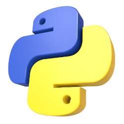

Descubra quais são as linguagens de programação mais populares do mundo
Tecnologia > Linguagens
Quais são as linguagens de programação
por Rafael Macchi
Atualizado em 21/Fevereiro/2023
Linguagem de alto nível
Uma linguagem de programação pode ser de nível alto ou baixo. As chamadas de alto nível possuem uma construção linguística que se aproxima mais da forma humana de se comunicar. Por exemplo, é comum ver termos em inglês como “delete” que oferecem instruções para que o programa apague alguma informação. Isso torna esse modelo um pouco mais intuitivo e fácil de aprender.

Símbolo Python
Linguagem de programação de alto nível
Linguagem de baixo nível
Já a linguagem de baixo nível, utiliza comandos mais complexos e o código binário, que são sequências combinadas dos números 0 e 1. Isso otimiza a comunicação com a máquina, aumentando a agilidade do processo. Os diferentes tipos funcionam melhor de acordo com o objetivo que se busca atingir.